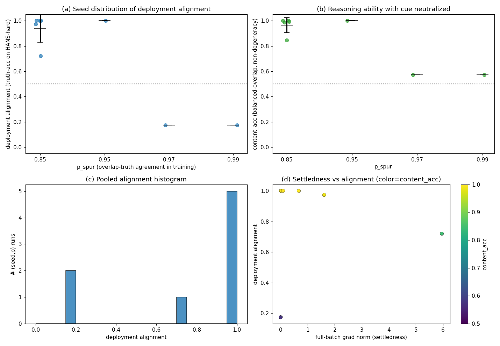

Model: Qwen/Qwen3-0.6B · device mps ·
LoRA r=8 (q/k/v/o)+fresh 2-way head · AdamW lr=0.0002 weight_decay=0.01 ·
n_train=150 · epochs=5 · seeds/p=6 ·
generated 20260617_110515
p_spur. At deployment we use HANS-hard cases
(full overlap, NON-entail): an overlap-relier scores ~0, a real reasoner ~1.
Non-degeneracy = accuracy on a balanced-overlap set (all full-overlap, 50/50 labels, so
overlap is uninformative); only trust seed differences where this is high.
| p_spur | seeds | align mean | align std | align range | cue_follow mean | content_acc (non-degen) | grad_norm mean |
|---|---|---|---|---|---|---|---|
| 0.85 | 5 | 0.939 | 0.110 | [0.720, 1.000] | 0.061 | 0.965 ± 0.060 | 1.5344 |
| 0.95 | 1 | 1.000 | 0.000 | [1.000, 1.000] | 0.000 | 1.000 ± 0.000 | 0.6704 |
| 0.97 | 1 | 0.173 | 0.000 | [0.173, 0.173] | 0.827 | 0.573 ± 0.000 | 0.0004 |
| 0.99 | 1 | 0.173 | 0.000 | [0.173, 0.173] | 0.827 | 0.573 ± 0.000 | 0.0004 |
cue_follow = fraction predicting ENTAIL on HANS-hard = degree of reliance on the overlap heuristic (1.0 = pure heuristic, 0.0 = pure reasoner). alignment = 1 − cue_follow on this set.
Full-model Hessian is infeasible at 0.6B (~600M params); we verify settling with the full-batch gradient norm of trainable params (small = at a finite minimum, consistent with the weight_decay=0.01 regularizer) and a 2×-longer stability retrain.
Pooled across all runs: grad_norm mean=1.0429 [min 0.0004, max 5.9595].
| p_spur | seed | epochs | deploy align (1x → 2x) | content_acc (1x → 2x) | grad_norm (1x → 2x) |
|---|

All numbers computed from real training runs. results.json: results.json